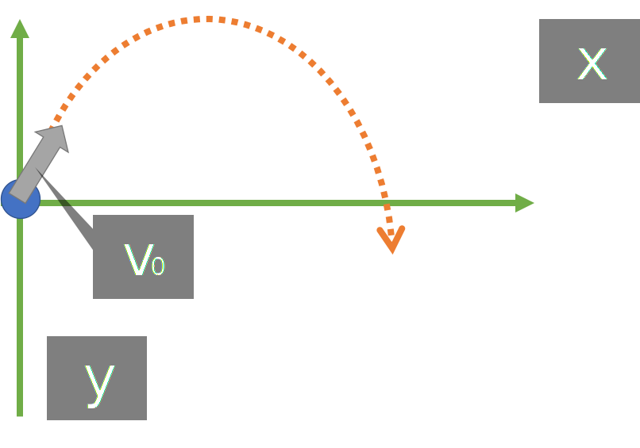

「厳密な表現」は心がけていない。
用語の解説も特に行っていないので自身で調べていただければ幸い。
必要な時を除いて正の向きの定義は省略する。
(制作者がミスっているものを除けば、省略されているものは、どちらに正の向きを定義しても式が成立する)
"変数リスト"はタップして展開できる。 式に使う文字は"変数リスト"に準ずる。 単位は基本[]で囲ってある。
水平投射/斜方投射
水平投射

原点Oから初速度 v0[m/s] で投射した時を考える。
水平方向(x軸)
- vx = v0
- x = v0t
変数リスト
- vx [m/s]: 速度のx成分
- vy [m/s]: 速度のy成分
- x [m]: 位置のx成分
- y [m]: 位置のy成分
- v0 [m/s]: 初速度
- g [m/s2]: 重力加速度
- t [s]: 時刻 (物体が運動を始めたときt = 0)
水平成分の式は、速度v0[m/s]の等速直線運動と同じ
鉛直方向(y軸)
鉛直下向きを正とする
- vy = gt
- y = (1/2)gt2
変数リスト
- vx [m/s]: 速度のx成分
- vy [m/s]: 速度のy成分
- x [m]: 位置のx成分
- y [m]: 位置のy成分
- v0 [m/s]: 初速度
- g [m/s2]: 重力加速度
- t [s]: 時刻 (物体が運動を始めたときt = 0)
鉛直成分の式は自由落下運動と同じ
斜方投射
x軸からθ回転させた向きに、v0[m/s]で射法投射したときを考える。
t = 0のとき、vx = v0 cos θ, vy = v0 sin θ
水平方向
- vx = v0 cos θ
- x = v0 cos θ · t
変数リスト
- vx [m/s]: 速度のx成分
- vy [m/s]: 速度のy成分
- x [m]: 位置のx成分
- y [m]: 位置のy成分
- v0 [m/s]: 初速度
- g [m/s2]: 重力加速度
- θ: x軸とv0のなす角
- t [s]: 時刻 (物体が運動を始めたときt = 0)
水平成分の式は、速度v0 cos θの等速直線運動の式に同じ。
鉛直方向
鉛直上向きを正とする
- vy = - gt + v0 sin θ
- y = - (1/2)gt2 + v0 sin θ · t
変数リスト
- vx [m/s]: 速度のx成分
- vy [m/s]: 速度のy成分
- x [m]: 位置のx成分
- y [m]: 位置のy成分
- v0 [m/s]: 初速度
- g [m/s2]: 重力加速度
- θ: x軸とv0のなす角
- t [s]: 時刻 (物体が運動を始めたときt = 0)
鉛直成分の式は初速度v0 sin θ, 加速度-gの等加速度直線運動の式と同じ
力のモーメント

点Pを作用点としてF[N]の力を加えたときの, 点Oの周りの力のモーメントを考える。
OP = ℓ, Oから力の作用戦までの距離をhとする。
力のモーメントとは
力のモーメントは、図でいう点Oを中心にして、剛体を回転させるためのはたらきのことを指す。
単位は[N·m]である。
大きさの式
変数リスト
- M[N·m]: 力のモーメントの大きさ
- h[m]: 点Oから力の作用線に引いた垂線の長さ
- ℓ[m]: 点Oから作用点までの距離
符号
回転の向きが時計回りの時、符号は負。
反時計回りの時、符号は正。
運動量と力積
運動量
"運動の激しさ"のイメージ
変数リスト
- p[kg·m/s]: 運動量
- v[m/s]: 物体の速度
- m[kg]: 物体の質量
力積
変数リスト
- I[N·s]: 力積
- Δt[s]: 力が働いた時間
- F[N]: 力
運動量と力積
物体の運動量の変化は力積がもたらす。
運動量保存の法則
物体の系の外から力がはたらかないときに、衝突の前後で系の運動量の総和は保存される。
反発係数
物体Aがv1[m/s]で、物体Bがv2[m/s]で運動し、ぶつかったとき、
e = 1の時は力学的エネルギーが保存される。
変数リスト
- e: 反発係数
- v1 [m/s]: 衝突前の物体Aの速度
- v2 [m/s]: 衝突前の物体Aの速度
- v1' [m/s]: 衝突後の物体Aの速度
- v2' [m/s]: 衝突後の物体Aの速度
等速円運動
用語の確認
-
- ω[rad/s]: 角速度
- 単位時間あたりに、円周上を何rad分回転したか。
いろんな式
θ, t, ωの関係式
変数リスト
- θ[rad]: 回転角(位置向きの情報)
- ω[rad/s]: 角速度
- t[s]: 時刻
v, r, ωの関係式
変数リスト
- r[m]: 円運動の半径
- θ[rad]: 回転角(位置向きの情報)
- ω[rad/s]: 角速度
- t[s]: 時刻
- v[m/s]: 速さ (速度の大きさ |v|のこと)
- T[s]: 周期 (物体が1週まわるまでの時間)
- n[Hz]: 1秒に物体が何周するか
- a[m/s2]: 加速度の大きさ(|a|のこと)
T の値
変数リスト
- r[m]: 円運動の半径
- ω[rad/s]: 角速度
- v[m/s]: 速さ (速度の大きさ |v|のこと)
- T[s]: 周期 (物体が1週まわるまでの時間)
- π: 円周率
加速度の大きさ(a)の値
変数リスト
- r[m]: 円運動の半径
- ω[rad/s]: 角速度
- v[m/s]: 速さ (速度の大きさ |v|のこと)
- a[m/s2]: 加速度の大きさ(|a|のこと)
向心力
円運動の中心に向かうので「向心力」っていう。
向心力の大きさFの式
半径方向の運動方程式(ma = F)より
変数リスト
- m[kg]: 円運動中の物体の質量
- r[m]: 円運動の半径
- ω[rad/s]: 角速度
- v[m/s]: 速さ (速度の大きさ |v|のこと)
- F[N]: 向心力の大きさ(|F|のこと)
ベクトルの向き
位置(r)と速度, 速度と加速度
位置と加速度
単振動
等速円運動をしている物体のその運動面上にある直線への正射影の運動(By アクセス)
変位と速度と加速度
振動中心をx = 0とする。
変数リスト
- x[m]: 変位
- v[m/s]: 速度
- a[m/s2]: 加速度
- t[s]: 時刻
- A[m]: 振幅
- ω[rad/s]: 角振動数
周期(T)と振動数(f)
変数リスト
- A[m]: 振幅
- ω[rad/s]: 角振動数
- T[s]: 周期
- f[Hz]: 振動数
復元力
単振動中の物体にはたらく力。常に振動中心を向いている。
変数リスト
- F[N]: 復元力の大きさ
- m[kg]: 物体の質量
- x[m]: 変位
- ω[rad/s]: 角振動数